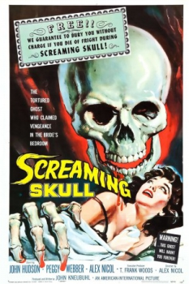
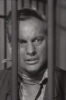

Country:United States, 68 minutes
Spoken languages:English
Genres:Thriller, Horror
Director(s):Alex Nicol
Writer(s):John Kneubuhl
Video Codec:Unknown
Number: 118


Certification:NR
Storyline:
Newlyweds Eric and Jenni Whitlock retire to his desolate mansion, where Eric's first wife Marianne died from a mysterious freak accident. Jenni, who has a history of mental illness, begins to see strange things including a mysterious skull, which may or may not be a product of her imagination.
Cast: 

Medium: Original DVD,
Comments: Part of: 100 Greatest Horror Classics
Loaned: No
Aspect ratio: Unknown